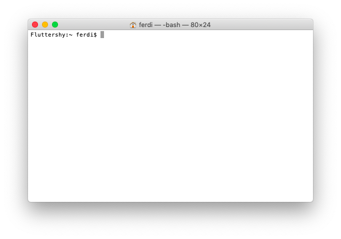
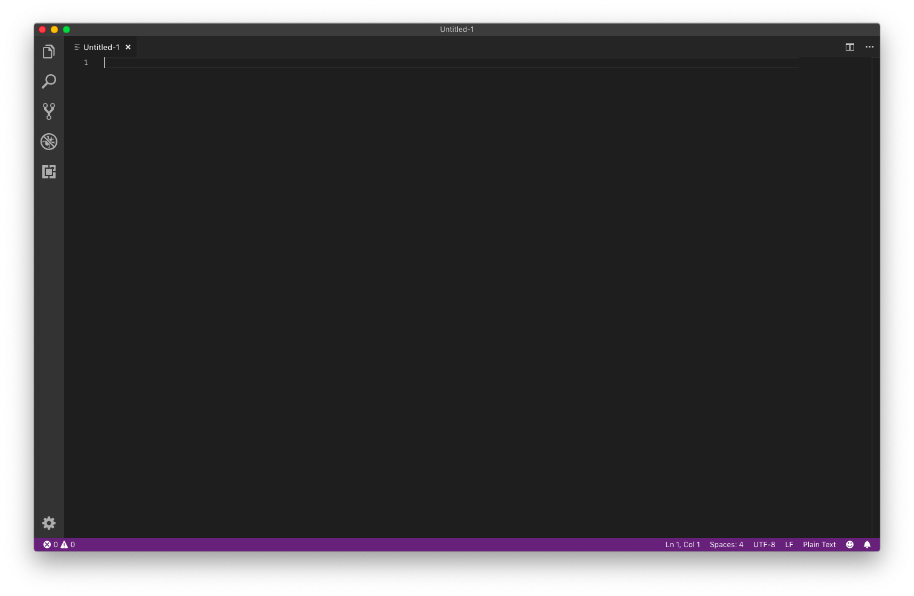

Ruby Monstas
Setting up
Your toolbox
The command line
Comes pre-installed on all operating systems!
| Operating System | Command line program |
|---|---|
| Windows | Powershell |
| macOS | Terminal |
| Linux | Terminal Emulator |
Set up a desktop shortcut for your command line now!
Your toolbox
Visual Studio Code
Don't worry, it's free and open source!
Set up a desktop shortcut for Visual Studio Code now!
Your toolbox
Finally, Ruby!
For macOS
Congratulations! There is nothing to be done. Ruby comes pre-installed!
For Linux
You probably know how to install packages on your distribution.
For example on Ubuntu, run in the command line:
sudo apt install ruby-fullFor Windows
Your toolbox
Check that your Ruby installation works:
- Open your command line (Terminal, Powershell or similar)
- Type in the window:
ruby --version - Push the Enter key
You should see something similar to this:
ruby 2.6.1p33 (2019-01-30 revision 66950) [x86_64-darwin18]
Additional Resources
What questions do you have?